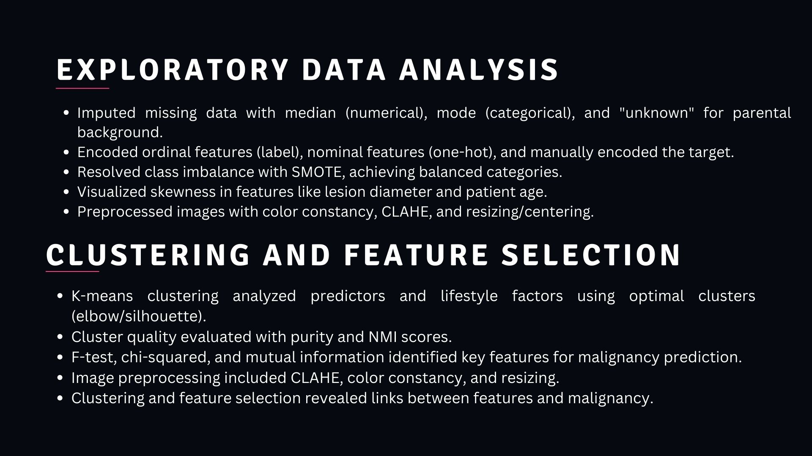
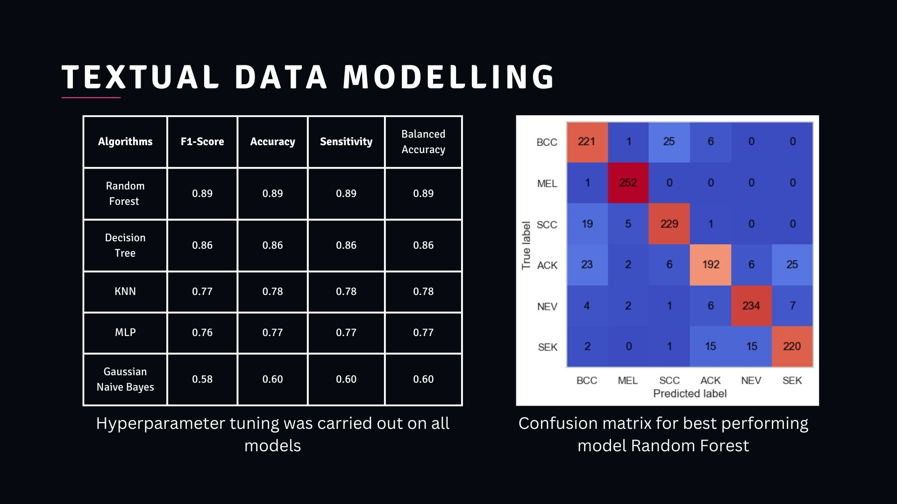
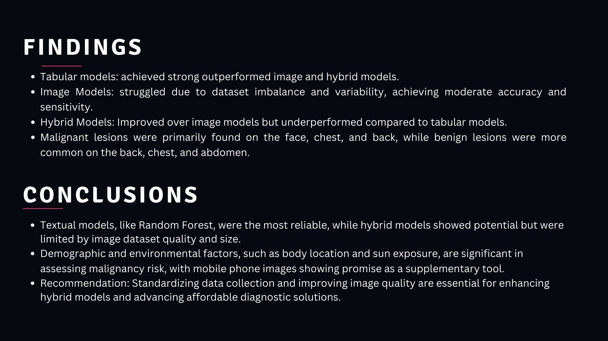

Skin Lesion Classification
Client
Personal
Date
September 2025
For
Classification
Quick question:
How do Patient Demographics, lifestyle, factors, environment exposures and
Lesion Characteristics Collectively Influence The Diagnosis of Malignancy in Skin Lesion
I worked on this projects with friends for a school coursework. We explored this dataset.
And asked the following questions:
- How does the performance of tabular data, image data and the combination of both compare in the classification of individual malignancy diagnoses in terms of f1 score, sensitivity, and balanced accuracy?
- What are the most common body regions for malignant lesions, and do these regions differ for benign versus malignant skin lesions?
- What kind of clusters based on the malignancy can we get based on lifestyle factors such as history of smoking and alcohol usage?
- How does the performance of CNN, manual feature extraction using feature extraction algorithms like Histogram of Oriented Gradients (HOG) or Local Binary Patterns (LBP), and a pretrained CNN model like MobileNet as a feature extractor compare in terms of f1 score, accuracy and sensitivity?
View our Github Here:here
View our full documentation here
01 / Project Overview
This project investigates whether mobile phone imagery and patient metadata can be combined to create accessible, low-cost diagnostic tools for detecting skin cancer, particularly in resource-limited settings. By comparing tabular, image-based, and hybrid machine learning approaches, the study identifies the most effective strategies for classifying malignancy among six different lesion types.
Key Tech Stack:
- Models: Random Forest, ResNet152V2 (Transfer Learning), Multi-Layer Perceptron (MLP), SVM, K-Means Clustering.
- Techniques: SMOTE (oversampling), Manual Feature Extraction (HOG, LBP), Feature Concatenation, CLAHE (image enhancement)
- Libraries: Scikit-learn, Keras, OpenCV, Matplotlib, Seaborn, Scipy, Numpy, Pandas, Scikit-image
02 / The Dataset
The study utilized the PAD-UFES-20
dataset, featuring 2,298 samples collected via smartphone cameras
- Metadata: Included patient demographics, lifestyle factors (smoking/alcohol), and clinical characteristics like lesion diameter and location.
- Images: Clinical-grade smartphone photos showing significant variability in resolution and angle, mimicking real-world diagnostic conditions.
03 / Methodology and Engineering
- Class Imbalance Mitigation: The dataset was heavily skewed toward certain classes like Basal Cell Carcinoma (BCC). SMOTE was applied to balance diagnostic categories for more robust training.
- Feature Engineering: Numerical data was imputed via median, while categorical features were one-hot or label-encoded. For images, a hybrid approach compared manual features (HOG/LBP) against deep learning features from a pre-trained ResNet152V2.
- Clustering Analysis: K-means clustering was performed on lifestyle factors to identify their relationship with malignancy risk.

04 / Performance and Results
- Top Performer: The Random Forest (resampled) model achieved the highest performance with 0.89 accuracy and 0.89 balanced accuracy using tabular metadata.
- Image-Based Modeling: Transfer learning with ResNet152 outperformed manual feature extraction but faced challenges with a small dataset, reaching 0.53 accuracy.
- Hybrid Insights: While hybrid models (combining image + text) outperformed standalone image models, they did not surpass the performance of pure metadata models, likely due to high variability in uncontrolled image capture conditions.
- Lifestyle Correlation: Clustering lifestyle factors yielded a purity score of 0.86, suggesting a strong link between habits (smoking, alcohol) and malignancy risk.

05 / Key Insights and Future Work
The project concludes that while clinical metadata is currently the most reliable predictor for malignancy in this dataset, mobile phone images show significant potential as a supplementary tool. Standardizing image collection processes—ensuring consistent lighting and resolution—is a critical next step for improving the accuracy of hybrid diagnostic systems.
